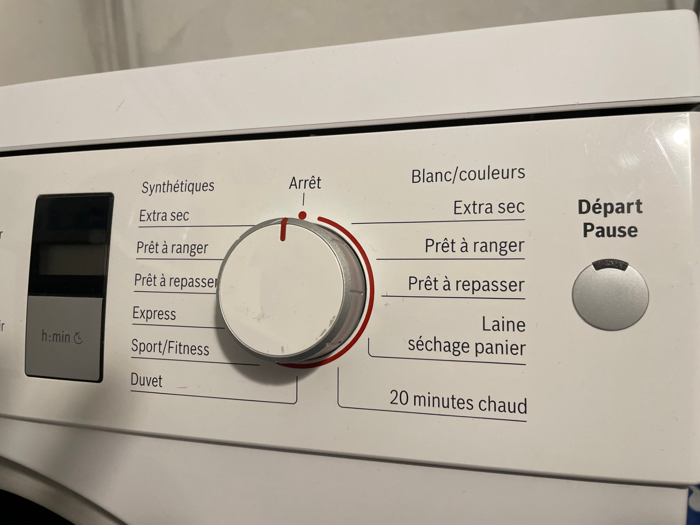

Dryer
A cloth hanger is provided for your convenience. Feel free to use it for items that need to air dry, helping to care for the planet.
Dryer short instructions
Cycle selection and Start button
Load the Dryer
Open the dryer door and place clothes inside.
Ensure clothes are evenly distributed and not overloaded.
Empty the Water Tank
Before starting, ensure the water tank is empty. Remove the tank, empty the water, and place it back.
Water tank location
Turn on the Dryer
Turn on the dryer using the power button.
The screen should light up.
Select Cycle
Choose the appropriate drying cycle based on the fabric type.
Use the cycle selection knob to choose your desired setting.
Start the Cycle
Close the door and press the Start button.
The dryer will notify you when the cycle is finished.